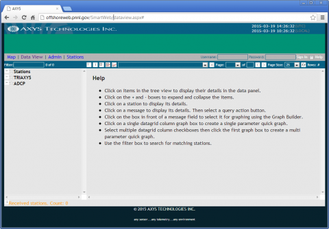
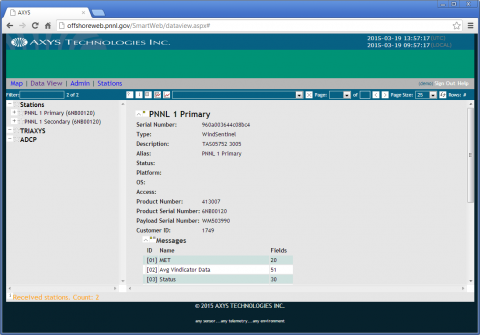
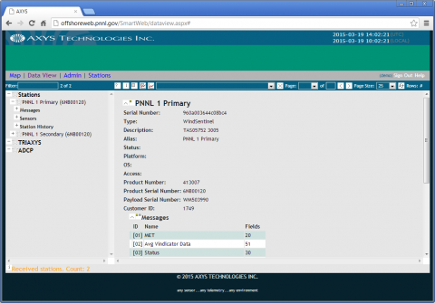
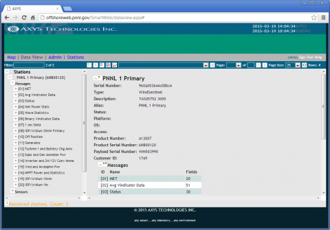
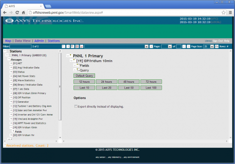
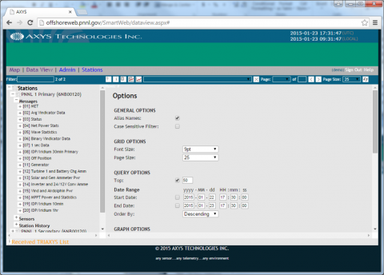
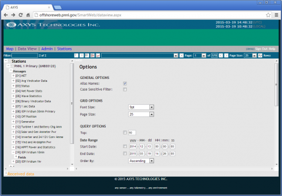
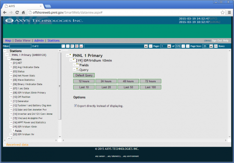
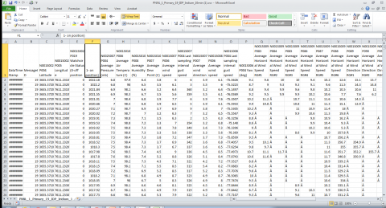

In December 2014, Pacific Northwest National Laboratory (PNNL) deployed the Energy Department’s floating lidar buoy off of Virginia Beach, Virginia, in less than 30 meters (m) of water, approximately 28 nautical miles offshore (approximate coordinates: 36° 52.00’ N, 75° 29.53’ W). This buoy collected meteorological and oceanographic data, including, but not limited to, the following:
- Time – Referenced to Greenwich Mean Time
- Buoy Position – Latitude and Longitude
- Atmospheric Data (at sea level) – Temperature, pressure, humidity, and dew point
- Wind Data (at sea level) – Wind speed, direction, and gusts at the sea surface
- Wind Data (lidar) – Average wind speed, direction and gust at six different heights
- Wave Data – Wave height, period, and direction.
All of the data were transmitted via satellite and are publicly available on the PNNL website. If you are not registered, visit the registration page to access the data.
Disclaimer: The information available through the PNNL website contains data sponsored by the U.S. Department of Energy (DOE). However, the data have not been reviewed by DOE employees, and DOE is not responsible for its use beyond this website. Neither the U.S. Government nor any agency thereof, or any of their employees, makes any warranty, express or implied, or assumes any legal liability or responsibility for the accuracy, completeness, or usefulness of any information, apparatus, product, or process disclosed, or represents that its use would not infringe privately owned rights.
How to Access the Data
Once you enter your email and logon to the website, there are two options for downloading the data: (1) the AXYS Data Portal, or (2) the Raw Measurement Data Files. In its present form, the raw data do not have data headings; therefore, it is recommended that the AXYS Data Portal be utilized for downloading the data.
1. To access the data, logon to the AXYS Data Portal by using the following username and password combination:
Username: demo
Password: demo

2. Once logged in, click the (+) next to the “PNNL 1 Primary (6NB00120)” under “Stations.”

3. Then, click the (+) next to “Messages.”

4. Users should see the screen below; each different “message” is a packet of information that is stored on the buoy. To find out what data are contained in each message, click on the (+) next to the message name, and it will list the different data. For more information regarding which instrumentation is collecting each measurement, consult the Message Description PDF.

Until the buoy is retrieved, the only data available are any messages that are preceded with the indication “IDP/Iriduim” ( e.g., [8] IDP/Iridium 30min Primary, [19] IDP/Iridium 10min, and [20] Iridium 1hr). Most users will want to access Message 8 and Message 19: Message 8 contains data related to wave conditions, while Message 19 has data related to wind conditions. Message 20 is related to the back-up generator. Once the buoy is retrieved, the additional data will be uploaded to the portal.
5. The example below will show how to download all of the existing data for Message 19. Click on “[19] IDP/Iridium 10min.”

6. Change the default inquiry to pick the date range of data for viewing or extraction.

7. Enter the date range that you would like to view or download. The buoy was on station starting December 13, 2014.

8. Right click Message 19. To export the data set to an Excel file, click the check box for “Export directly instead of displaying.” Click on “Default Query.” You may also view the data in the AXYS portal without exporting the data; however, these instructions do not include an explanation of how to view the data in the portal. If exporting the data, a window will pop-up to allow the download of the CSV file for use in Excel.

9. Upon opening the file in Excel, there is a slight issue with the data headings. The “watch circle” heading becomes two columns (E and F). Delete either cell E1 or F1, and shift the remainder of Row 1 accordingly.

Note: The different Range Gates (RG) heights are (from 1 to 6): 55 m, 70 m, 90 meters, 110 m, 130 m, and 160 m. These are the heights of the range gate centers. The height resolution is +/-20 m (or 40 m). There is a degree of overlap in adjacent gates.
In the future, these data will be migrated onto the National Oceanic and Atmospheric Administration’s National Data Buoy Center website. Additionally, when the buoy is retrieved, the additional data messages will be uploaded to this portal.